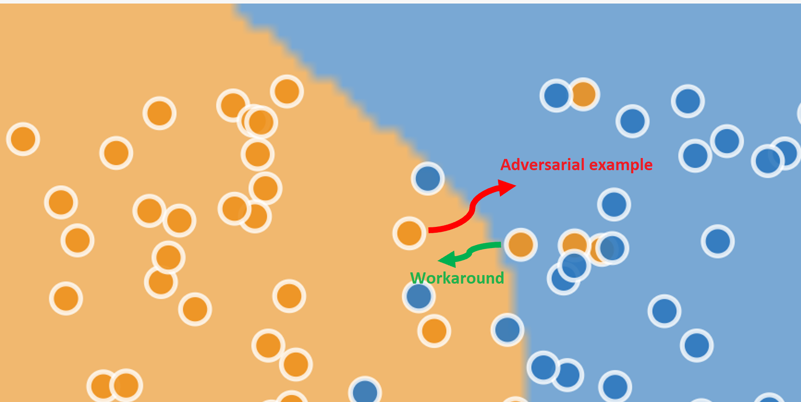
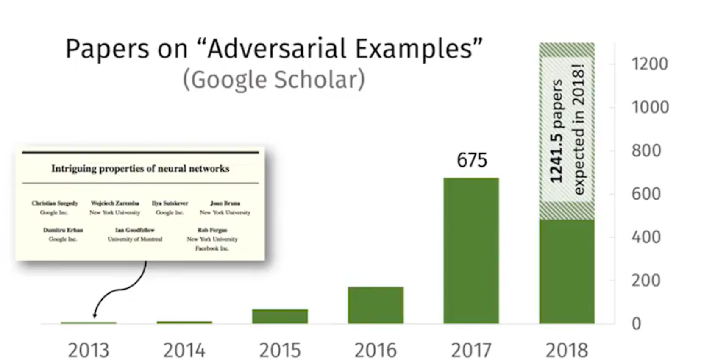
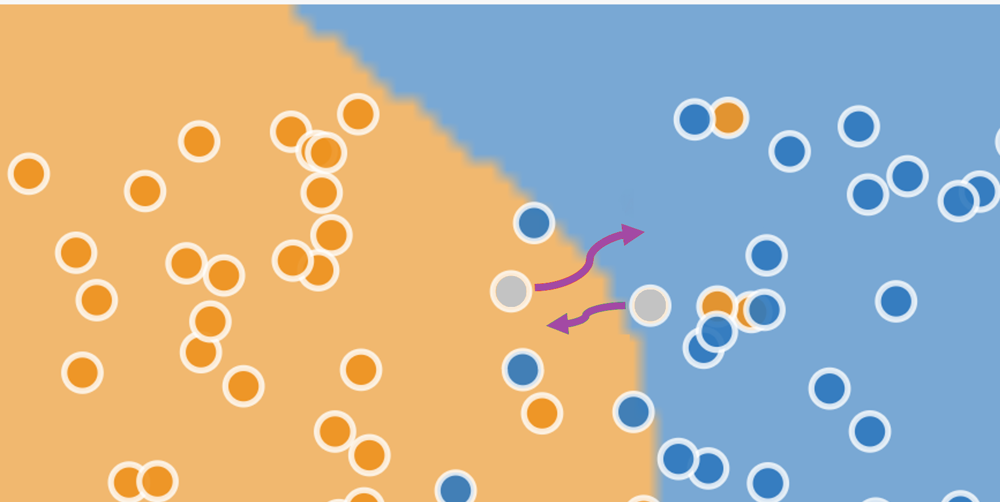

Workarounds and Medical Machine Learning
A recent paper highlights “adversarial attacks” by physicians as a threat to medical machine learning. Its recommendations may do more harm than good.
Adversarial examples
The rise of deep learning has been accompanied by a fascination with “adversarial examples”: the classic cases are striking because they cause amazingly accurate machine learning models to make amazingly stupid mistakes. A carefully designed tweak invisible to the human eye may cause an image-recognition system to mistake what is “obviously” a picture of a macaw for a picture of a bookcase.

In the few years since their discovery, adversarial examples have been shown to be both ubiquitous and difficult to prevent. These “adversarial attacks”, as they are also called, cast a doubt over whether deep learning systems can survive in the real world. Deep learning systems seem to have the potential for great accuracy over some dimensions, but also great fragility in others.
The real-world implications of adversarial examples are going to be important topics over the next few years. One example of things to come is a recent paper in the prestigious Science magazine warning about Adversarial attacks on medical machine learning (full text PDF)1. It’s no surprise that healthcare has been highlighted: investment in deep learning systems for healthcare is already massive. High-profile successes in “better than human” diagnosis from medical images, and the potential for extracting useful information from electronic health records have made for something of a gold rush. Eric Topol’s new book Deep Medicine charts some of the potential. However, the authors of the Science paper warn, the billions of dollars flowing through healthcare systems provide obvious incentives for “attackers” to corrupt the system for fraudulent purposes. If adversarial attacks are easy to make and difficult to defend against, then the promise of medical machine learning may never be realized.
1 Samuel G. Finlayson, John D. Bowers, Joichi Ito, Jonathan L. Zittrain, Andrew L. Beam, Isaac S. Kohane, “Adversarial attacks on medical machine learning”, Science, 22 March 2019, p 1287.
The Science paper, by researchers from Harvard and MIT, is my main topic here, but first we need to talk about a seemingly-humdrum topic that gets much less attention, but which turns out to be closely related.
Workarounds
An adversarial attack is an input crafted intentionally to force a model to make a mistake. A workaround is the opposite: an input crafted intentionally to force a model to correct a mistake.
A schematic example is shown below. The data points are shown with their “true” values of blue or orange, and the background shade marks the regions categorized by the model as “blue” or “orange”. The model has a high accuracy: most of the actually-blue dots lie in the categorized-as-blue region, and most of the actually-orange points lie in the categorized-as-orange region. But even the best machine learning systems are statistical engines with non-zero error rates, so you can see a few incorrectly classified examples in the diagram too.
The adversarial example (red arrow) changes the input for a correctly-classified “orange” data point so that it is incorrectly classified as blue. The workaround (green arrow) changes the input for an “orange” data point that is incorrectly classified as “blue” so that it is classified correctly.

Adversarial examples may be novel, but workaroudns have become routine in the automated workplace. Automation shifts decision-making from “front line” workers to computerized systems, but as these systems have entered the workplace, many professionals have learned a new and often unacknowledged skill: they have become experts at making automated decision systems work properly.
As just one example, legal scholar Jennifer Raso explored the changing jobs of Ontario welfare case workers when an automated decision system was introduced in a prize-winning paper. Instead of making their own judgments about client needs, the role of case workers is now to enter data into an algorithmic scoring system (not deep learning), which makes entitlement decisions according to well-defined rules. She writes about how social service case workers responded:
While new technologies may attempt to deskill and decentre front-line decision-makers, transforming them into data entry clerks, caseworkers learn how to expertly translate and input client data to produce decisions that more closely match their interpretation of clients’ needs and welfare laws.
The importance of workarounds will be familiar to anyone who has read James C. Scott’s Seeing Like a State. Heavily designed schemes to improve the human condition assume, and impose, a simplified and idealized representation of working and living that neglects the unruly irregularities of real life. These systems rely on a certain level of workaround to function: people prepared to bend the official rules in order to get their work done. There is a reason that the “work to rule” has been successful in labour disputes as a form of protest.
The American healthcare system is no exception. The rigidities of automated billing systems recently produced a memorable essay by Atul Gawande entitled Why Doctors Hate Their Computers, documenting many of the challenges experienced by physicians as new decision support systems have been introduced, and the ingenious but often costly workarounds they have had to undertake in order to deliver high quality care to their patients.
Will workarounds be needed for the next generation of deep learning medical systems? History suggests that they will. There is a long history of technical innovations that are designed around idealized and simplified models of behaviour, and which underestimate the complexities of “edge cases” in real life. Witness the over-enthusiasm around self-driving cars a couple of years ago, that is now being confronted with the messiness of reality.
From a researcher’s point of view, adversarial examples are fascinating cases that raise a multitude of new questions: so much so that several papers per day are now published on the topic. Workarounds, in contrast, are boring. They raise few questions. They are merely machine learning residue—what’s left over after the algorithm has made its best attempt, hopefully cleared up by the next iteration of the model.

From an end user’s point of view, things look different. Faced with getting their job done and a decision system that seems to have taken a bad decision, they are not in a position to improve the model: they can either follow often a maze of twisty passages in an attempt to get an exception or they can fudge the input and move on. Workarounds are far more interesting than adversarial examples, for all their exoticism.
Two sides of the same coin
The previous section presented adversarial attacks and workarounds as opposites, whcih holds true in a laboratory environment where the “correct” result for each individual data point is known and particularly in the classic cases where the “correct” result is, to a human, obvious and uncontroversial. In real-world environments things are different. Machine learning systems are statistical beasts, and however accurate they may be over a large data set, statistics cannot tell us whether any one individual data point is handled correctly or not. In many cases the “true” value for an individual case is not available at all. This difference between the world of the laboratory and that of production environments is noted by the Harvard / MIT researchers:
[T]he ground truth in medical diagnoses is often ambiguous, meaning that for many cases no individual human can definitively assign the true label between, say, “benign” and “cancerous” on a photograph of a mole.
The figure below is the same as the previous one, but now the two individual data points are coloured grey, showing that we do not know their “true” value. All of a sudden, instead of being opposites, there is no difference between the adversarial example and the workaround.
(The diagram is misleading in an important way: in a two-dimensional space only a few of the dots are close to a boundary, and that boundarey is with just one other class. It would be reasonable to think that the problem is irrelevant for most inputs that lie comfortably within one region or another. In the many-dimensional space in which machine-learning models operate, it turns out that all dots are close to boundaries with all other classes: the situation for machine learning is therefore much more severe than the diagram suggests.)

Surprisingly, machine learning gives no definition to distinguish unambiguously between an adversarial example and a workaround. A standard definition in papers is something like “an input to a machine learning model that an attacker has intentionally designed to cause the model to make a mistake”, but assigning “intent” is outside the scope of machine learning, and a “mistake” is, as we have seen, often not decidable in any individual case.
Some machine learning practitioners have gone so far as to define “attacks” as any attempt by a subject to influence the outcome of a machine learning system, but that makes an attacker of anyone who has put effort into writing an appealing resume in the hopes of getting a job. Adversarial examples and workarounds are both just optimization attempts: intentional changes to inputs in order to generate desired outputs.
But don’t take all this from me: if you want to hear an expert opinion on the definition problem, see this keynote talk by David Evans (especially the first ten minutes) from which much of the last few paragraphs is taken.
When it comes to medicine, physicians face incentives to engage in workarounds as well as in adversarial attacks. The Science article is not completely silent on the topic of workarounds: it references a survey carried out by the American Medical Association from almost 20 years ago, described in a titled Physician Manipulation of Reimbursement Rules for Patients: Between a Rock and a Hard Place, but the remainder of the Science article focuses almost exclusively on the problem of adversarial attacks by healthcare providers.
The “physician manipulation” article outlines the frustrations physicians face when trying to provide care for their patients:
In some cases, physicians may feel trapped between professional obligations to advocate for their patients and conflicting contractual obligations to follow coverage rules. It has been suggested that some insurers are “gaming” patients and physicians—tricking them into paying for covered services by routinely denying coverage but then approving services that are subsequently appealed, knowing that time and other constraints will prevent some appeals.
Any attempt to tackle the threat of adversarial attacks will also penalize workarounds: designing proper rules for machine learning systems starts with recognizing the problems, and an exclusive focus on adversarial attacks fails to do so.
Governing machine learning
When it comes to interventions, the Harvard / MIT researchers make two recommendations. The first is to procrastinate: to avoid stifling innovation by prematurely enforcing demands for robustness. The second is to increase IT-driven supervision of medical practitioners, storing “hashes” of images to check that they are not “tampered” with during processing.
To take the second suggestion first: the proposal will crack down on “adversarial attacks” but will also prevent workarounds. As such, it removes room for doctors’ discretion and judgement. Good physician performance will be measured by accurate data entry rather than creative problem solving, and such measures would prevent physician pushback against any payment-minimizing moves by insurance companies. It reduces the role of physician from a professional responsible for diagnosis and prescription (which most would see as their primary roles), to that of a managed and supervised data entry technician. Any assessment of medical machine learning must address the potential consequences of deskilling among physicians.
The billing system, whether or not it is driven by deep learning, is a site of tension, at which all parties seek to find their best outcomes. To treat the problems around billing systems as security problems in which the healthcare provider is the most likely attacker is to adopt the perspective of the insurance company or the vendor that provides them with a deep learning system.
In fairness, the authors do point out that the American medical claims approval process is plagued by many competing financial interests, “providers [i.e. doctors and hospitals] seeking to maximize and payers [insurance companies] seeking to minimize reinbursement”, but for the bulk of the article, and in the recommendations, the problem of “attacks” by insurance companies is neglected.
A more productive approach would be to adopt a game-theoretical perspective, where strategic considerations by all parties lead to some equilibrium outcome. As I’ve written elsewhere, most machine learning systems of any interest are incentive incompatible, and medical systems are no different. The subjects who provide the inputs and the consumers of the outputs have different and conflicting interests.
In such an arrangement costly governance measures are not just likely, but inevitable, and that leads us to what’s wrong with the first recommendation: procrastination. To encourage deployment without proper costing of governance is to underestimate implementation costs: it’s building in debt, committing institutions that deploy these systems to unknown but significant future costs, and painting a false picture of efficiency gains. It tilts the cost comparison between physician-diagnosis and machine-diagnosis in favour of the machine (or, more accurately, its vendor), and more-or-less guarantees buyer’s remorse.
There is no one-size fits all solution, of course. The right form of governance for EHR-based methods would be different to that for medical image diagnostics. But a prerequisite for any progress must be to acknowledge all the incentives in the system, to attempt to estimate the true costs of implementation, and not to overlook the humble but essential role of the workaround.